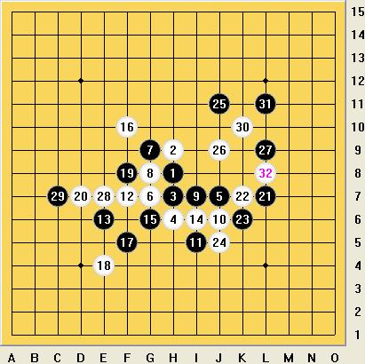

关于这个松月变化黑棋有什么好的下法?
首页
★棋心愉悦★
#1 关于这个松月变化黑棋有什么好的下法? 作者：龙小小 发表时间：2010-9-5 20:28:08

黑棋有什么好的下法,请大家发出来,共同学习一下.
［ 古灵精怪 于 2010-9-5 20:34:06 时花20金币送鲜花一朵］
［ 极地剑客 于 2010-9-5 23:32:25 时花20金币送鲜花一朵］
［ 淡月疏星 于 2010-9-11 8:21:02 时花20金币送鲜花一朵］
［ 淡月疏星 于 2010-9-11 8:21:12 时奖励此帖[金币加 100 威望加1］
#2 Re:关于这个松月变化黑棋有什么好的下法? 作者：古灵精怪 发表时间：2010-9-5 20:32:48
喜欢松月
#3 Re:关于这个松月变化黑棋有什么好的下法? 作者：裁决殿雪月 发表时间：2010-9-5 21:36:38
K11 OR K12
松月太奇妙了，恐怕是最复杂多变的开局了，也难怪中村茂这位小老头儿如此痴迷呢――~
［ 极地剑客 于 2010-9-5 23:32:35 时花20金币送鲜花一朵］
#4 Re:关于这个松月变化黑棋有什么好的下法? 作者：古灵精怪 发表时间：2010-9-11 2:29:54
给我点钱啊
［ 淡月疏星 于 2010-9-11 8:21:39 时花20金币送鲜花一朵］
#5 Re:关于这个松月变化黑棋有什么好的下法? 作者：名儿 发表时间：2010-9-14 23:29:04
这些棋对我来说都太深奥了，，我还要努力学习~！不过对五子棋的爱永远不变~！有爱就会前进~！
［ 掌棋宣传员 于 2010-9-20 10:45:43 时花20金币送鲜花一朵］
［ 掌棋宣传员 于 2010-9-20 10:45:45 时花20金币送鲜花一朵］
#6 Re:关于这个松月变化黑棋有什么好的下法? 作者：寅少 发表时间：2010-12-30 13:47:05
=======上图对应的爱五子棋谱代码如下，以便你拆解：========
h8h9h7h6j7g8i7g7g9j6i5f7e6i6g6f10f5e4f8d7l7k7k6j5l5m4
======================================================求后续正确解= = 这个25是在这次爱五子杯决赛出现的25~26这样挡不知道如何杀~求高人指点1条路~
［此帖子已被 寅少 在 2010-12-30 13:50:11 编辑过］
［此帖子已被 寅少 在 2010-12-30 13:53:27 编辑过］
［ 淡月疏星 于 2010-12-30 15:50:05 时奖励此帖[金币加 100 威望加1］
#7 Re:关于这个松月变化黑棋有什么好的下法? 作者：五子痴 发表时间：2011-1-1 8:42:13
=======上图对应的爱五子棋谱代码如下，以便你拆解：========
h8h9h7h6j7g7g9g8i7j6i5f7e6i6g6f10f5e4f8d7l7k7k6j5l5m4j9i8j10j8i9
======================================================
#8 Re:关于这个松月变化黑棋有什么好的下法? 作者：寅少 发表时间：2011-1-3 15:38:21
=======上图对应的爱五子棋谱代码如下，以便你拆解：========
h8h9h7h6j7g8i7g7g9j6i5f7e6i6g6f10f5e4f8d7l7k7k6j5l5m4j9i8j10j8i9e7c7k11
======================================================